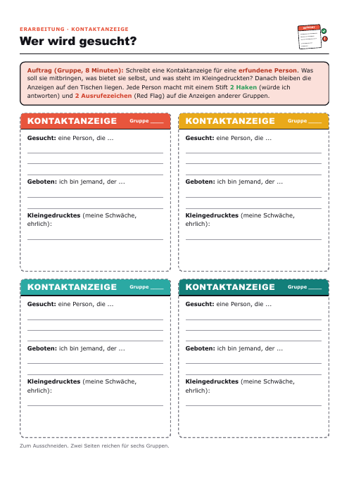

Eine Doppelstunde (90 Minuten), in der die Klasse offen darüber redet, was ihr in einer Beziehung wichtig ist. Mit Kontaktanzeige, Dilemma-Fällen und einem Steckbrief-Spiel.
Fünf Phasen und ein Puffer. Jede Phase hat eine Impulsfrage, damit das Gespräch nicht nach der Aufgabe stoppt. Unten steht, was du als Lehrkraft vorbereiten solltest.
Tipp: Gesprächsregeln vorher kurz vorlesen. Quatschzettel selbst aussortieren, ein Beispielzettel vorneweg hilft.
Tipp: Ohne Zubehör: ein normaler Stift reicht, es braucht weder Klebepunkte noch Klebeband. Wer will, nimmt Grün und Rot. Regel: Die Anzeige gehört einer erfundenen Person. Bei Allgemeinplätzen („nett, ehrlich“) nachfragen: Was tut so jemand konkret?
Tipp: „Kommt drauf an“ ist verboten. Sie müssen sich entscheiden, dann ist die Begründung echt. Die Figuren sind bunt gemischt, alle Fälle laufen auch als Folie.
Tipp: Das ist die offene Version der Matching-Karten aus der Vorlage. Wenn die Zeit knapp wird, streichen. Papier sparen: nur als Folie zeigen.
Tipp: Die anonymen Fragen sind dein Stoff für Stunde 4. Vorher sortieren und Unpassendes aussortieren. In der iPad-Klasse reicht das PDF für OneNote.
Vorbereitung, Gesprächsklima, Stolpersteine und was von der Vorlage übernommen wurde.
Klick, Pfeiltaste oder Wischen blendet den nächsten Schritt ein. Für die Klasse auf Vollbild stellen, die Folien passen sich jeder Größe an.
Jedes Blatt öffnet sich einzeln und lässt sich als PDF speichern. Die Fälle und Steckbriefe laufen auch als Folie, dann brauchst du sie nicht zu kopieren.

| Blatt | Wie oft kopieren |
|---|---|
| Zettel | 2 Seiten (12 Zettel pro Seite, bei 24 Personen) |
| Kontaktanzeige-Vorlage | 2 Seiten (8 Vorlagen, reicht für 6 Gruppen) |
| Dilemma-Karten | 2 Seiten (je 4 Fälle, reicht für 6 Gruppen) |
| Steckbriefe | 3 Seiten (eine pro 2 Gruppen) oder nur als Folie |
| Hefteintrag + Fundament | 24 Seiten oder 0: als PDF in OneNote |
| Gesprächsregeln | 1 Aushang oder nur als Folie |
Mit Hefteintrag in OneNote und Steckbriefen als Folie sind es etwa 6 Seiten, ohne diese Sparmaßnahmen 33.
Ethik 8, Stunde 3 der Sequenz „Liebe und Partnerschaft“. Fälle und Personen sind erfunden.